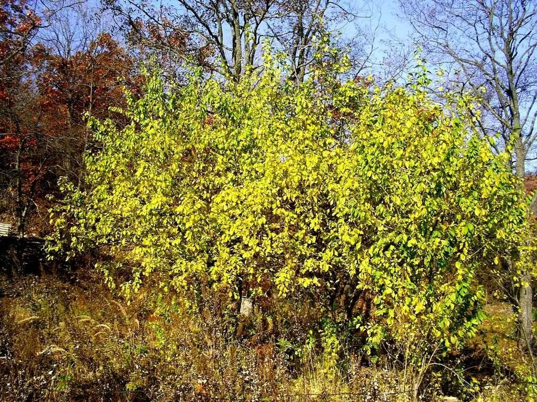

灌木与花木 · 植物界
紫叶李 Prunus cerasifera

中国南北常见的彩叶小乔木，全年叶片紫红，春季开粉白色小花，是城市道路与庭院绿化中应用最广的彩叶树种之一。
- 分类
- 门被子植物门纲木兰纲目蔷薇目科蔷薇科属李属
- 栖息环境
- 海拔 1500 米以下的平原、城市绿地与庭院，喜光耐寒耐旱
- 地理分布
- 原产亚洲西南部，中国各地广泛栽培
- 保护级别
- 暂无评估；中国未列入国家重点保护野生植物名录
物种志
紫叶李为落叶小乔木，高可达 8 m，树皮暗灰色；叶片卵形至椭圆形，边缘具细锯齿，整个生长季叶片呈紫红色，是其主要观赏特征。花期 3–4 月，花单生或 2 朵并生，花径约 2 cm，花瓣 5 枚、粉白色，花梗细长；果实为核果，球形，成熟时暗红色或紫红色，果肉薄。
紫叶李原产亚洲西南部，中国各地广泛栽培，喜光、耐寒、耐旱，对土壤要求不严，在北方城市中生长良好。因叶片紫红、树形优美，常被栽植于道路、公园与居住区，是应用最广的彩叶小乔木之一；春季粉白花与紫红叶相映，观赏效果独特。果实可食但果肉薄、味酸，多用于加工；木材可供细木工用。紫叶李与红叶李、樱桃李常被混称，园艺上紫叶李是樱桃李的紫叶变型，以叶色作为主要观赏性状。
形态与习性
- 株高可达 8 m，树皮暗灰色
- 花期3–4 月，花粉白色
- 果期6–7 月，核果暗红色
- 光照喜光，光照足则叶色更艳
- 水分耐旱，怕积水
- 土壤适应性强，各类土壤均可生长
- 主要用途城市道路与庭院彩叶绿化、果实加工、细木工用材
趣味知识
- 紫叶李整个生长季叶片都呈紫红色，是城市里应用最广的彩叶树种之一。
- 紫叶李春季开粉白色小花，与紫红色叶片相映，观赏效果独特。
- 紫叶李是樱桃李的紫叶变型，园艺上以叶色作为主要观赏性状。
- 紫叶李的果实暗红色、果肉薄，可食但多用于加工。